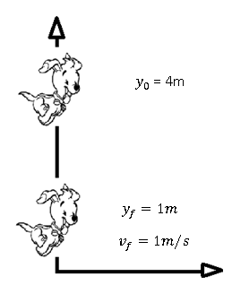
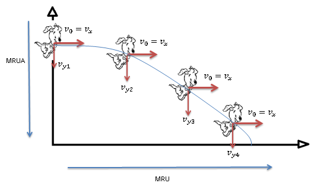
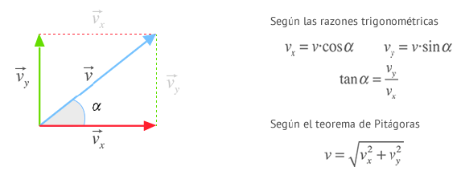
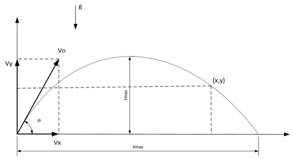
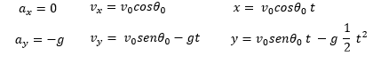
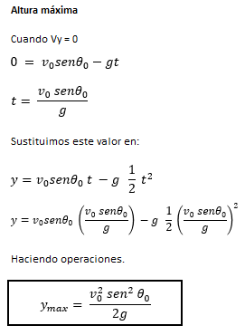
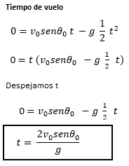
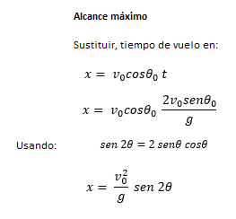
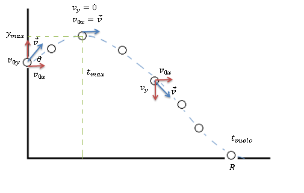
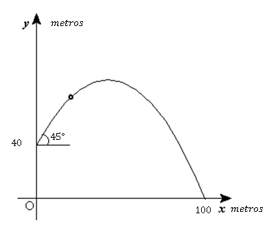

Existen varios tipos de lanzamientos de proyectiles:
Caida Libre
Lanzamiento Horizontal
Lanzamiento Vertical
Movimiento Parabolico
Los tres primeros movimientos son muy parecidos a los M.R.U.A pero ahora interviene una nueva variable, y esa es la gravedad, el cual es una fuerza física que la Tierra ejerce sobre todos los cuerpos hacia su centro, en el caso de nuestro planeta, el ejerce una aceleracion (la fuerza y la aceleracion estan relacionados de manera proporcional) de 9,8 m/s^2.
Caida Libre
La caída libre es un movimiento rectilíneo uniformemente acelerado (MRUA) en el que se deja caer un cuerpo verticalmente (su velocidad inicial es cero porque dejamos caer un cuerpo) desde cierta altura y no encuentra resistencia alguna en su camino. Las ecuaciones de la caída libre son:
`yf = y0 - frac{1}{2}*g*t^2`
`vf = - g*t`
Como vemos no es nada complicado, el negativo nos indica la direccion de la gravedad que casi siempre es negativa porque apunta en direccion "-j". Otra cosa que vemos es el cambio de "x" por "y", y es que en Caida Libre generalmente nos importa solamente el eje vertical ya que es ahi donde se representa este tipo de movimientos. Por ultimo veamos un tip que Skippy nos quiere mostrar saltando desde una altura.

Figura 1: Skippy demostrando Caida Libre.
Si quisieramos obtener el tiempo que le toma a Skippy ir de su posicion inicial `y0` a su posicion final 'yf', observamos que la ecuacion:
`yf = y0 - frac{1}{2}*g*t^2`
Es parecida a
`xf = xo +vo*t + (1/2)*a*t^2`
Con la diferencia de que la velocidad inicial `vo` es cero, pero porque? Todo cuerpo que acelera desde el reposo tiene una velocidad inicial de cero. Por eso en las formulas de caida libre se toma en cuenta que esa velocidad es cero, pero puede que existan casos donde no sea asi.
Lanzamiento Vertical
El lanzamiento vertical es un movimiento rectilíneo uniformemente acelerado (MRUA) en el que se lanza un cuerpo verticalmente con cierta velocidad inicial desde cierta altura y no encuentra resistencia alguna en su camino. Podemos distinguir dos casos según el sistema de referencia considerado:
Lanzamos el cuerpo hacia arriba y por tanto velocidad inicial positiva (v0y >0). En este caso las ecuaciones del lanzamiento vertical hacia arriba son:
`yf = yo +voy*t - (1/2)*g*t^2` y `vf = voy - g*t`
Lanzamos el cuerpo hacia abajo y por tanto velocidad inicial negativa (v0y < 0). En este caso las ecuaciones del lanzamiento vertical hacia abajo son:
`yf = yo -voy*t - (1/2)*g*t^2` y `vf = -voy- g*t`
Lanzamiento Horizontal
El lanzamiento horizontal consiste en lanzar un cuerpo horizontalmente desde cierta altura. El lanzamiento horizontal resulta de la composición de un movimiento rectilíneo uniforme (MRU horizontal) y un movimiento rectilíneo uniformemente acelerado de caída libre (MRUA vertical). En el siguiente ejemplo Skippy se impulsa horizontalmente desde una altura:

Figura 1: Skippy demostrando el Lanzamiento Horizontal.
Podemos observar que la velocidad tiene dos componentes, vx y vy, donde la componente X viene gobernado por un MRU, es decir, la velocidad es constante, asi que la componente X de la velocidad siempre sera la misma. En la componente Y la cosa cambia porque viene afectado por la gravedad, sino Skippy quedaria en el aire permanentemente! Ahora veamos las ecuaciones que gobiernan este tipo de movimientos:
La velocidad forma un ángulo α con la horizontal, las componentes x e y se determinan recurriendo a las relaciones trigonométricas más habituales:

Figura 1: Componentes de la velocidad.
Movimiento Parabolico
El movimiento parabólico, consiste en lanzar un cuerpo con una velocidad que forma un ángulo α con la horizontal. El movimiento parabólico o tiro oblicuo resulta de la composición de un movimiento rectilíneo uniforme (MRU horizontal) y un movimiento rectilíneo uniformemente acelerado de lanzamiento hacia arriba o hacia abajo (MRUA vertical).En la siguiente figura puedes ver una representación de la situación para un caso simetrico:

Figura 1: Movimiento Parabolico Simetrico.
Donde las componentes de la velocidad se pueden resumir de la siguiente forma:

Para este tipo de movimiento aparecen nuevas variables, revisemos de que tratan.
Altura máxima: Este valor se alcanza cuando la componente Y de la velocidad vale 0, o visto de otra forma, es la altura maxima que alcanza un objeto cuando experimenta un movimiento parabolico como se mostro en la figura anterior.

Tiempo de vuelo: Es el tiempo que le toma al objeto realizar el Movimiento Parabolico desde su posicion inicial hasta el final, es decir, cuando su altura final sea cero.

Alcance Horizontal: Se trata de la distancia máxima en horizontal desde el punto de inicio del movimiento al punto en el que el cuerpo impacta el suelo.

Entonces el Movimiento Parabolico Simetrico es cuando la altura inicial y final son el mismo, veamos el caso cuando son diferentes

Figura 1: Movimiento Parabolico Asimetrico.
En este caso aunque los conceptos sean iguales, las formulas son diferentes porque las que acabamos de ver toman en cuenta que la altura inicial es cero, cuando no siempre sera asi, por lo tanto en estos casos es mas conveniente utilizar las ecuaciones tradicionales de MRU para la componente X y MRUA para la componente Y. Veamos un caso donde se pueda aplicar un movimiento parabolico asimetrico obteniendo todos los datos posibles del siguiente ejercicio:

Figura 1: Caso de un movimiento parabolico asimetrico.
En este caso pareciera que tenemos muy pocos datos, pero no es asi. De la ecuacion de posicion del eje X podemos despejar el tiempo y substituirlo en la ecuacion de posicion del eje Y.